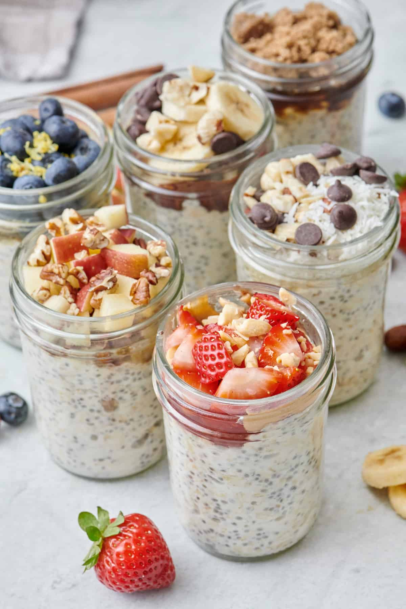

Overnight Oats

Description
Overnight oats are simply oats that are left to soak
overnight instead of cooked in the morning, which
makes them perfect for a quick, filling and nutritious
breakfast. It's a bit like making cold-brew coffee
instead of the regular cup of hot coffee in the morning.
Ingredients
- Oats
- Milk
- Chia Seeds
- Yogurt
- Flavoring
- Sweetener
- Toppings
- To start, combine old-fashioned oats, chia seeds, Greek or vegan yogurt, and vanilla extract. If you're using a sweetener add it in now too
- Top with your milk of choice
- Mix the overnight oats together until you see no clumps
- Next, seal or cover with a lid, and chill in the fridge for at least 2 hours or overnight